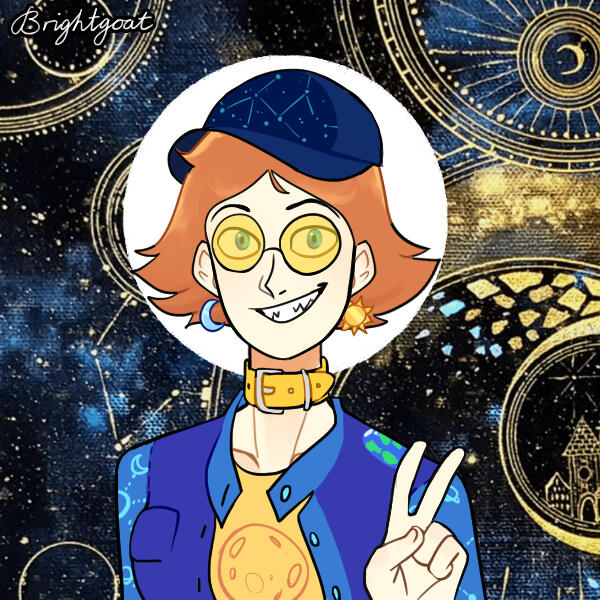

Aster's Heliosphere!!!
She/it pronouns!
host! lucid dreamer! chaotic creature!
the socializer! the one who infodumps!
the star of the show!
Okay but calling myself the star sounds really selfish and literally self-centered but like. Look it's just kinda personal cosmology. Fake lore for funsies. Why not? And hey, I'm the one who is like, literally always glowing.